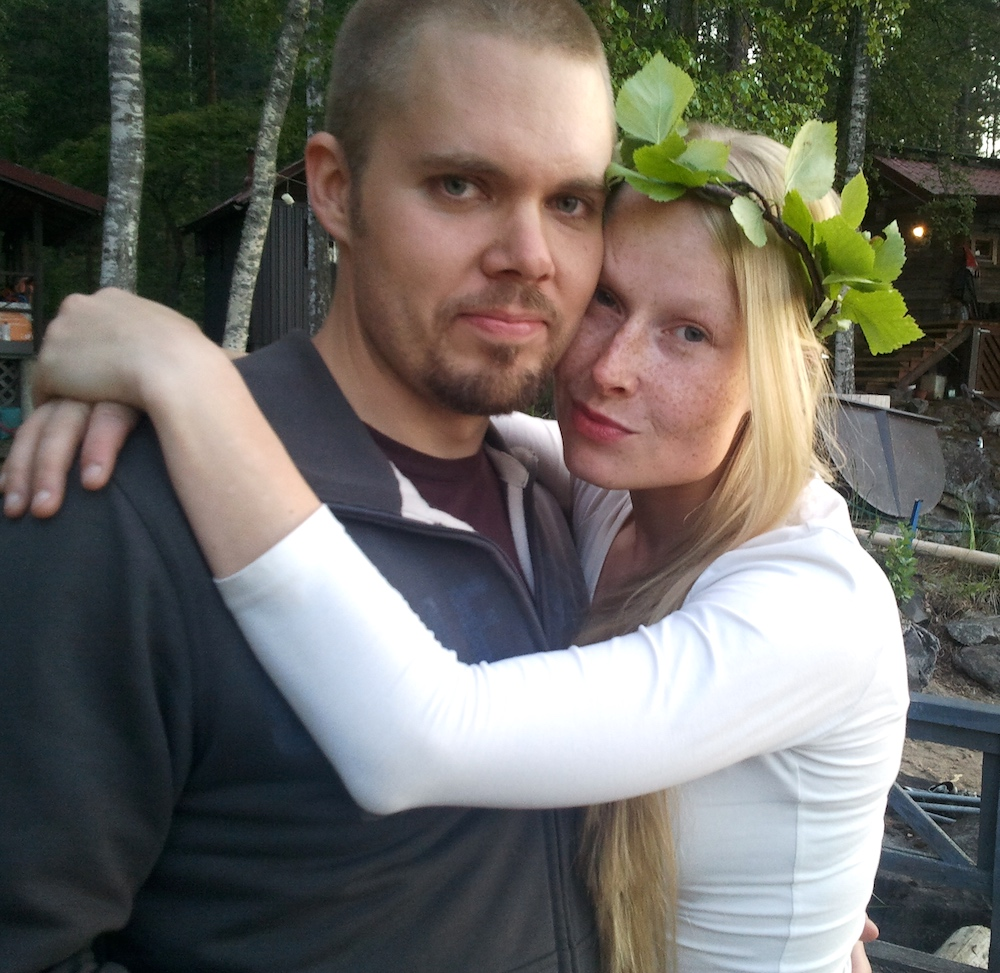

Marin Quattro pysähtyi tänään hetkeksi menneiden ikävien asioiden äärelle. Toivottavasti ne piirtyvät pian vain ja ainoastaan silloin, kun vilkaiset taustapeiliin. Toivottavasti takaikkunasta näkyy paljon muutakin. Ja toivottavasti edessä näkyisivät pian ne samat hahmot, jotka tässäkin kuvassa, ja sama vilpittömyys - ainakin osa siitä.
PS. Tuota partaa ei tarttis näkyä... :D
 3. luukku